vEM and Neuronal Connectomics in Marine Zooplankton Larvae
Volume Electron Microscopy
Gordon Research Conference
May 4 - 9, 2025, Castelldefels
Centre for Organismal Studies, Heidelberg University
@jekely@biologists.social

Mastodon - take back control of social media
Platynereis dumerilii

- breeding culture
- genome sequence
- microinjection, transgenesis
- neuron-specific promoters
- knock-out lines
- neuronal connectome
- neuronal activity imaging
Array tomography workflow
 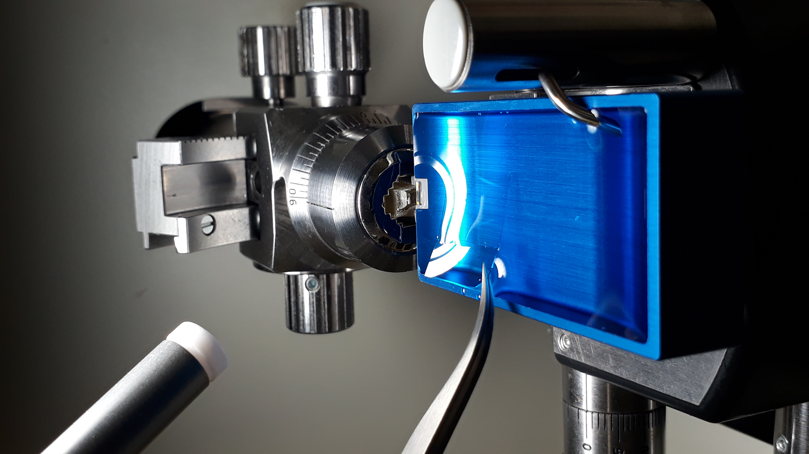
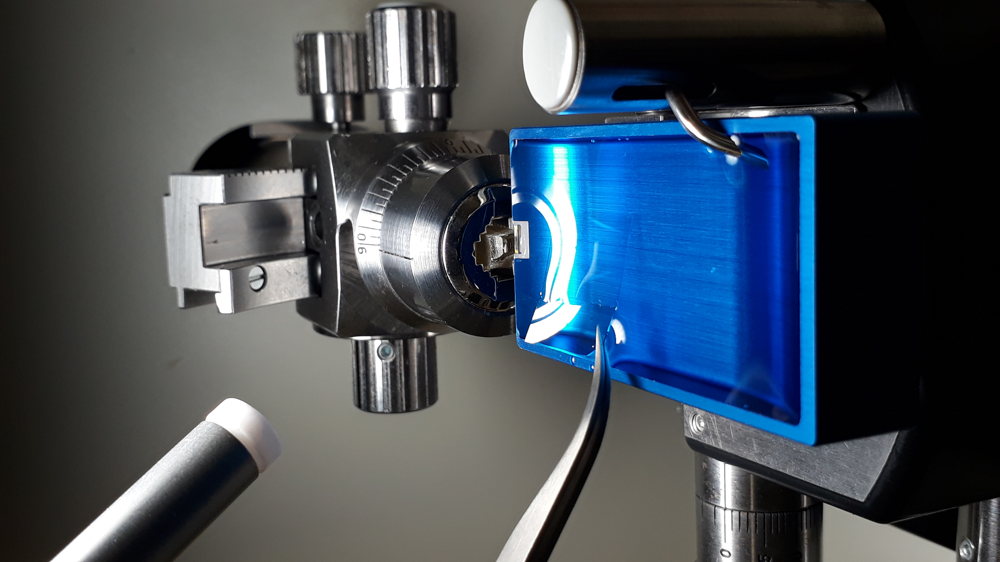
Multiciliated cells form ciliary bands
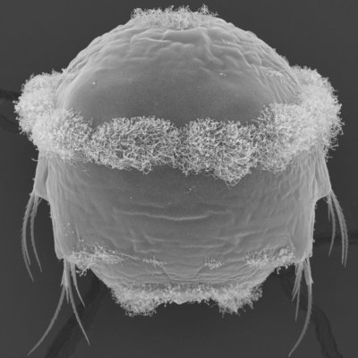
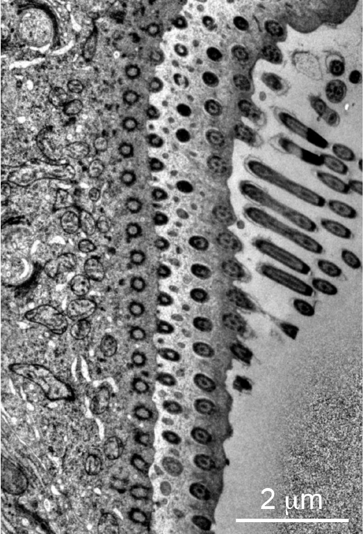
- basal-body spacing: 0.35-0.55 μm

Whole-body annotation of all ciliary basal bodies
Annotation of all cell types

Cell-type-level synaptic connectome

Neural circuit of the visual eyes

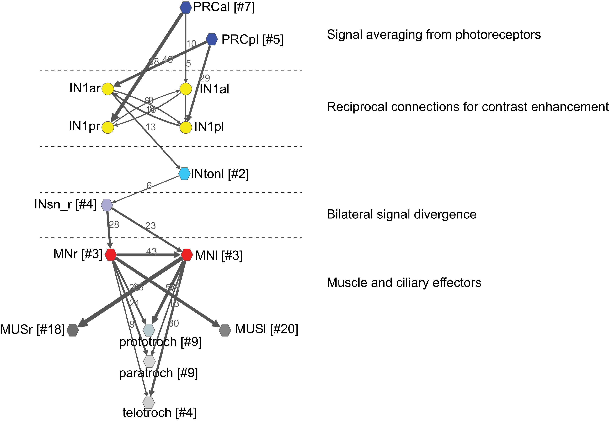
Whole-body coordination of cilia
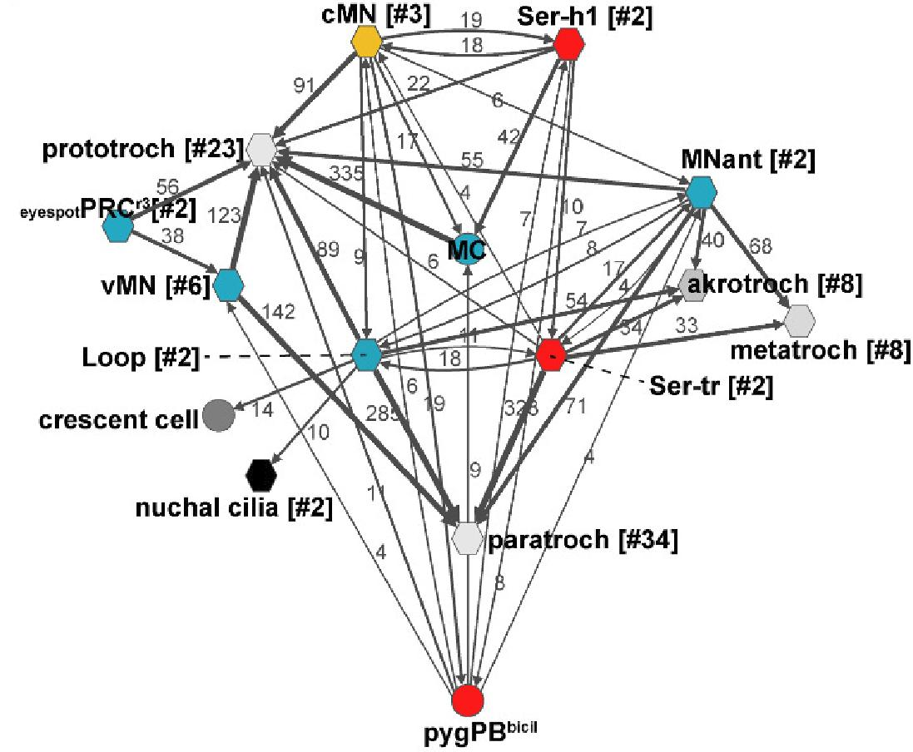
Pressure response in Platynereis larvae
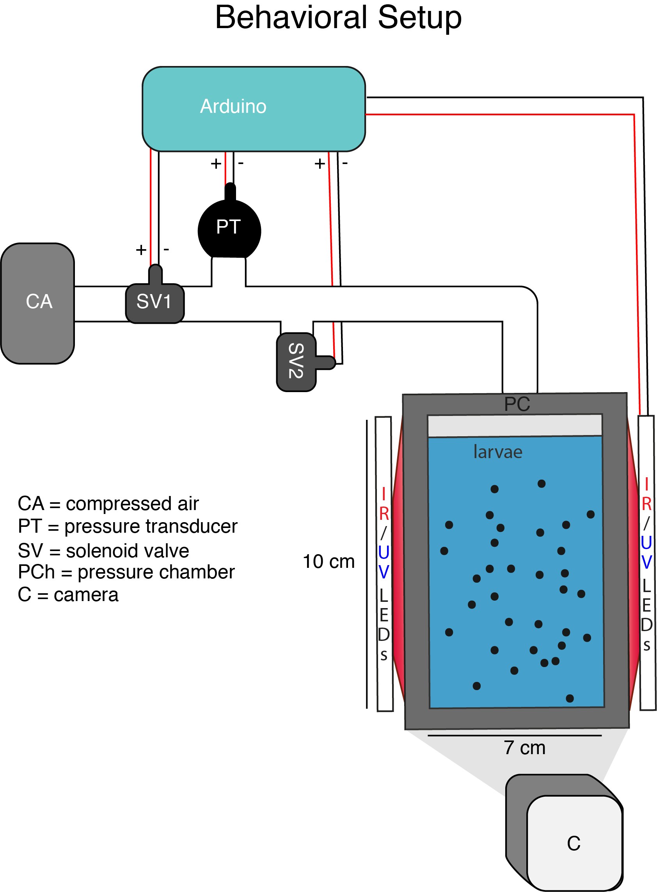
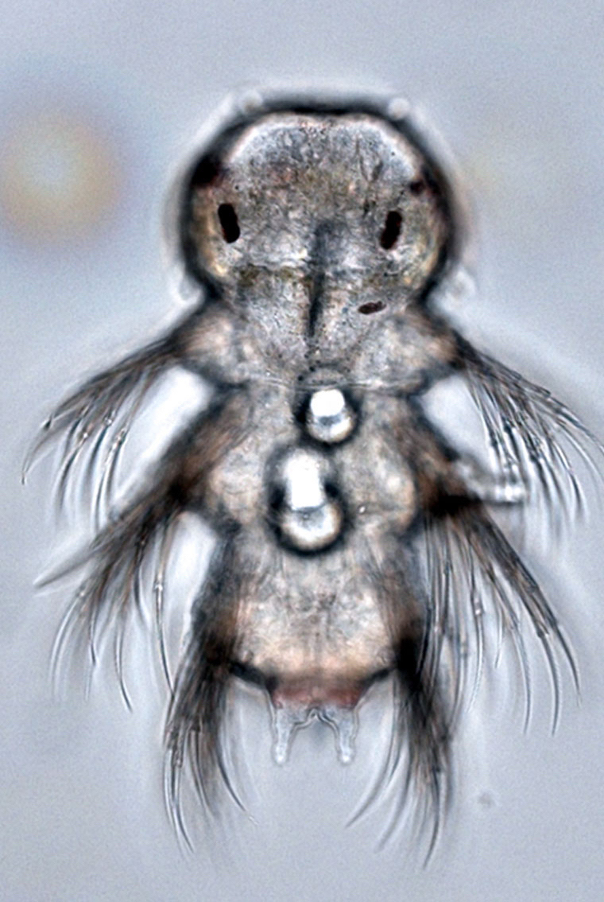

Pressure response is graded
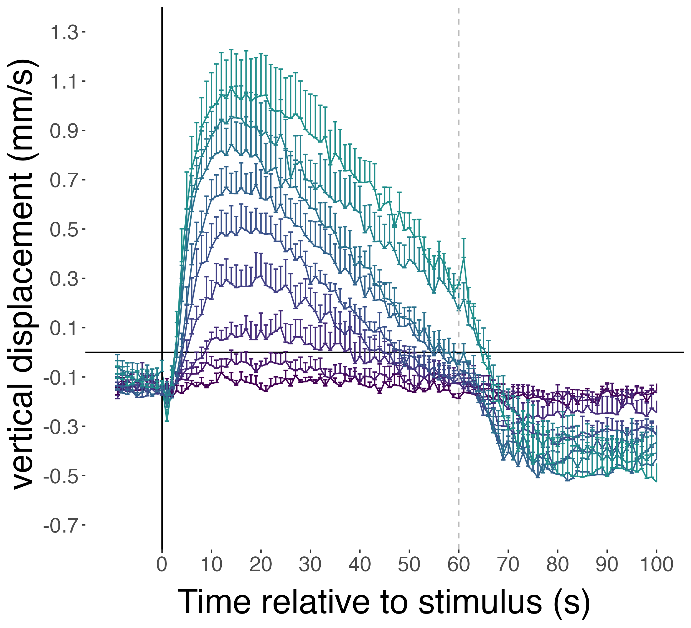
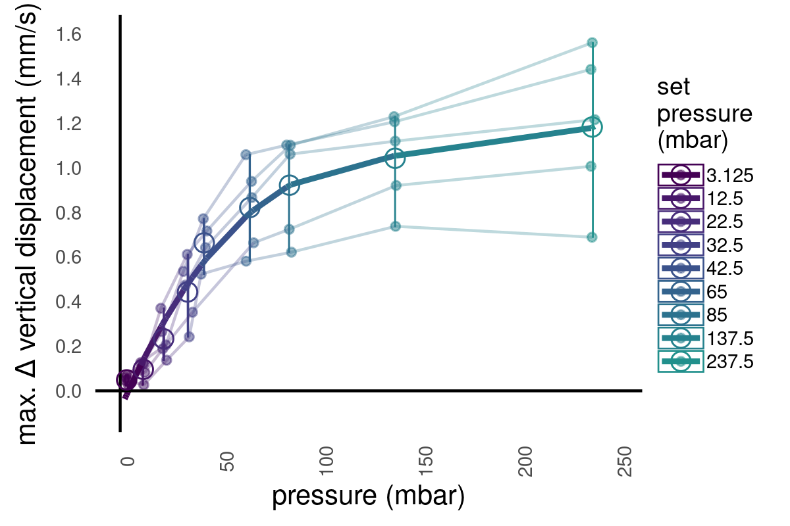
Swimming speed increases, trajectories straighten
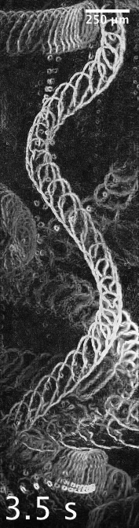 ctr
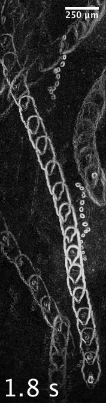 pressure

Ciliary beating increases under pressure
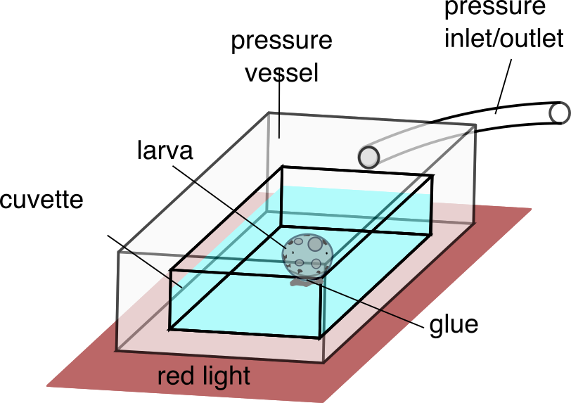
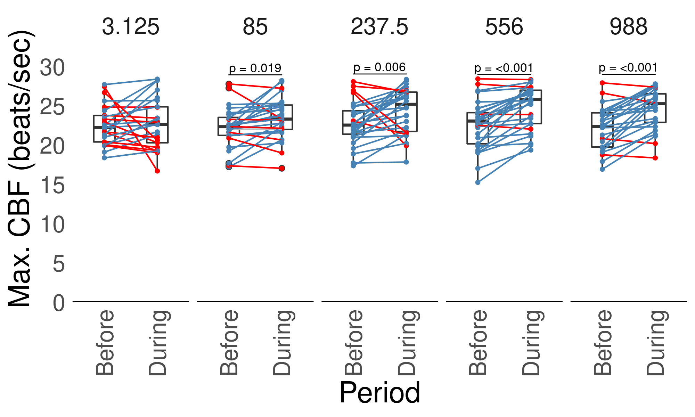
Which cells respond to pressure?
Microscopy pressure chamber 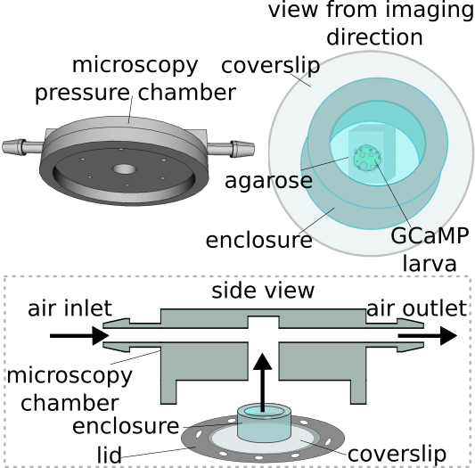
Calcium imaging 
Reduced ciliary compartment in c-opsin1 mutants

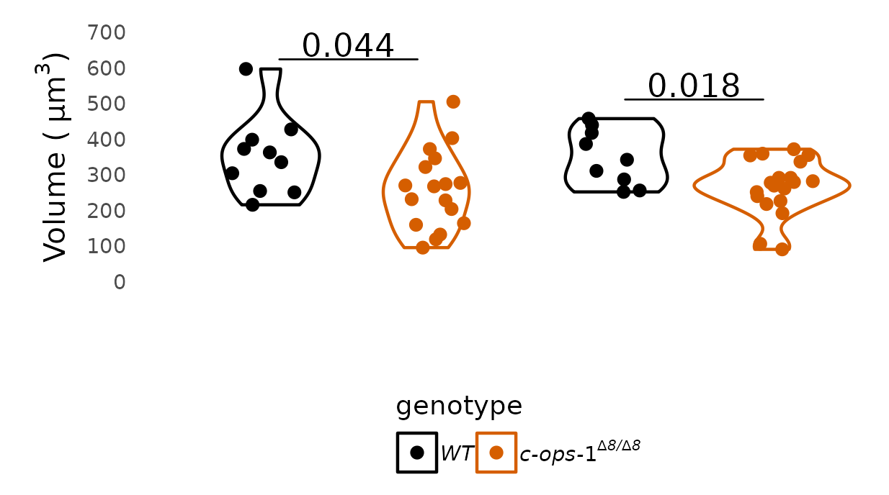
Mechanism of barotaxis

The ctenophore gravisensory organ

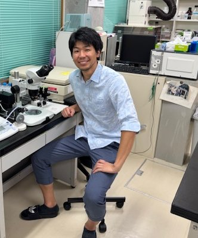